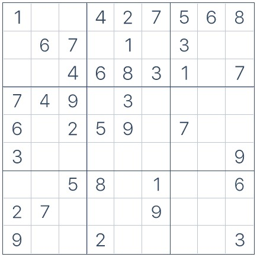

| Nasıl Oynanır? | Çözüm Yöntemleri | Zorluk Dereceleri | Sudoku Çözme Süresi |
|---|
|
Sudoku Nedir?
Sudoku her yaştan insanın oynadığı eğlenceli ve popüler bulmaca oyunlarından biridir.Eskiden çoğu insan sudokuyu gazetelerin bulmaca sayfalarında oynarken günümüzde birçok mobil uygulamadan sudokuya kolaylıkla erişilebilir.Sudoku diyagramı 3x3 boyutunda kalın çizgilerle çevrili 9 alandan oluşur.Her bir alan 3x3 boyutunda 9 kare bulundurur.Amaç boş karelere 3 temel kural uygulanarak 1'den 9'a rakamları yerleştirmektir.

|